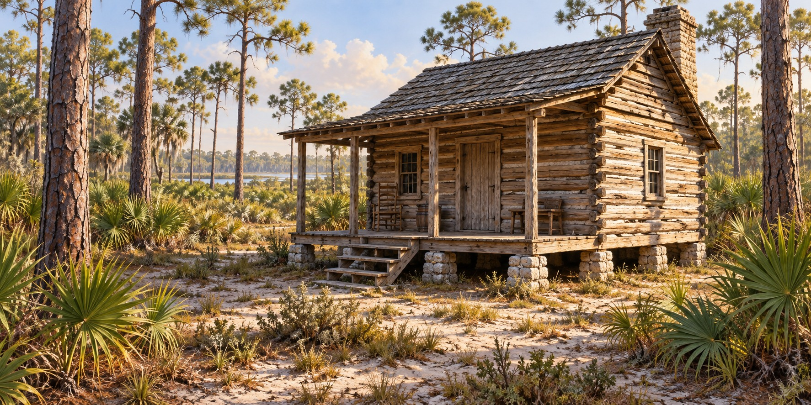

Why Cabins Were Built Off the Ground
Pier Foundations and the Space Beneath the Floor

The space beneath a raised wooden cabin is part of the building’s design. Piers carry the structure above the soil, separating its lowest timbers from damp ground and leaving the underside accessible. In Florida, that simple arrangement helped builders respond to local materials and conditions.
Keeping Wood Away from Damp Soil
Florida building sites differ in drainage, elevation and rainfall. Low flatwoods may hold seasonal water, while other locations drain more readily. A single statewide rainfall number cannot explain the conditions beneath every house.
Wood decay depends on moisture, exposure and the condition of the material. Even durable heartwood can deteriorate when it stays wet. National Park Service guidance for historic log buildings identifies ground contact and poor drainage as problems around sill logs. Raising the wood reduces one source of exposure, but a building still needs maintenance.
Supports Suited to the Building
A pier foundation uses separate supports under the structure. Stone and brick appear in historic examples. The placement and height of those supports depend on the building and site, so there was no universal eighteen-to-thirty-six-inch rule for all Florida cabins.
Dudley Farm’s architectural survey records a former pine-log house on a limerock foundation. That specific example is more useful than an unsupported claim that every cabin used the same material. Other foundations may include later repairs, making it necessary to distinguish original construction from changes.
Tabby, a shell-lime material, belongs to the history of some coastal buildings. Its use must be established for a particular structure before it is described as the standard foundation along an entire coast. Wooden supports also existed, but their orientation did not make them immune to moisture or decay.
What the Open Space Could Do
Air movement may assist drying under suitable conditions. It does not automatically solve moisture problems or prove that a cabin was measurably cooler. Drainage and roof runoff still affect the wood beneath the floor.
A crawl space also leaves room for animals to shelter. Raising a cabin was not a barrier against snakes or other wildlife. The earlier account of dogs routinely managing snakes beneath pioneer houses is omitted because a supporting record was not established.
Sills Joists and Floorboards
Sills are the heavier base members carried by the foundation. Joists span between supporting members and carry the floor above. Keeping those names distinct helps explain how the house’s weight reaches the piers.
Floor surfaces varied too. Some early buildings used split-log puncheon, while others had sawn boards. Access to milling, the date of construction and family resources influenced the choice. A single plank thickness or nail type cannot describe every pioneer floor.
Limits of a Practical Design
Termites can reach raised wood, although an accessible foundation can make some evidence easier to notice. Elevation may keep a floor above shallow water, but protection depends on flood depth, currents and the stability of the supports. Two feet of clearance cannot guarantee that a house or its contents will survive a flood.
At a historic cabin, look at how the piers meet the sills and how the ground drains around them. The relationship explains the building more clearly than a universal pioneer rule. Raised construction was a practical adaptation whose success continued to depend on the site and the condition of the house.
Quick Facts
| Purpose | Reduce wood’s contact with damp soil |
|---|---|
| Height | Varied by building and site |
| Materials | Stone and brick in documented historic examples |
| Floor framing | Sills support joists; joists carry the floor |
| Floor surface | Puncheon or sawn boards, depending on building and resources |
| Limit | Elevation does not exclude wildlife or guarantee flood or termite protection |
| Example | Dudley Farm’s former log house stood on a limerock foundation |
Discussion Questions
1. How do sills, joists and piers work together?
2. What problems can remain beneath a raised floor?
Related Articles
FLH-0050 — Building a Homestead
FLH-0051 — Building with What the Land Provided
Sources
Bomberger, Bruce D. The Preservation and Repair of Historic Log Buildings. National Park Service, Preservation Brief 26. Source record
Historic American Buildings Survey. Dudley Farm, HABS FL-565. Former log-house foundations and surviving farm buildings. Library of Congress. Source record
Glassie, Henry. Vernacular Architecture. Indiana University Press, 2000. Publisher record: Source record